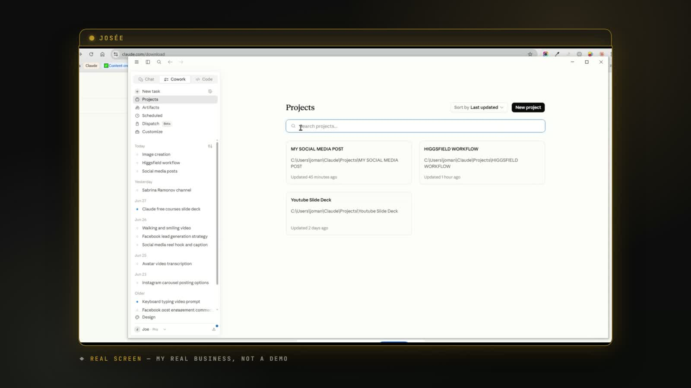
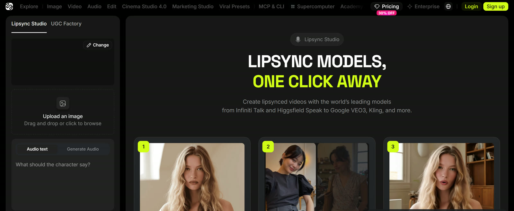
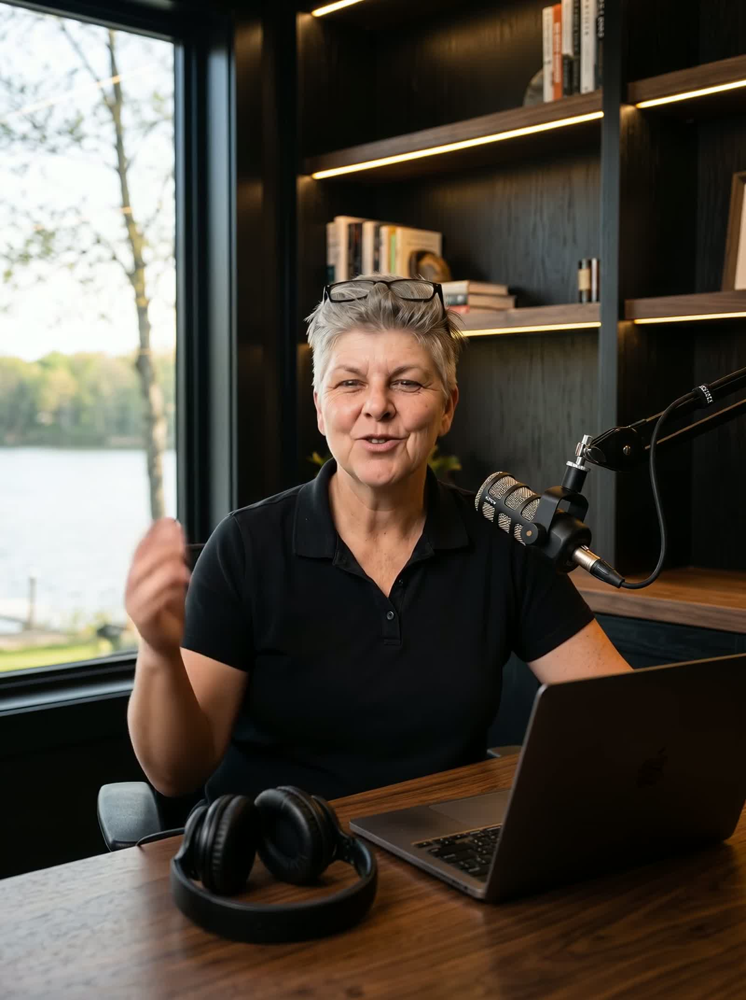
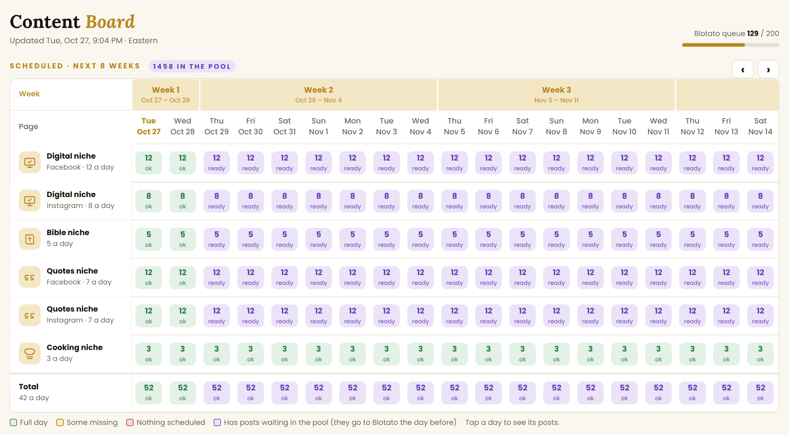
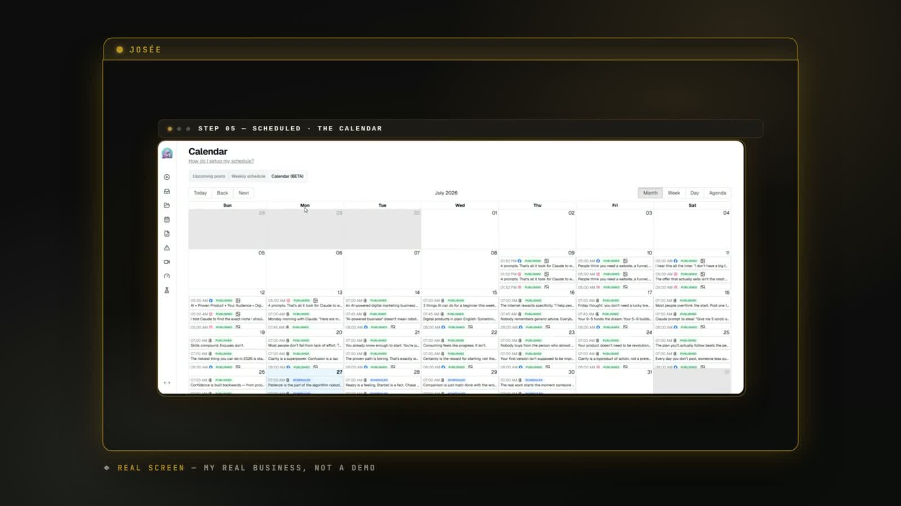

The A-to-Z
Masterclass
My whole system, step by step. From the mindset that gets you started, to Claude, your brain file, your customer, your AI helpers, your AI twin, your first product, and how to sell it. Every prompt included. Copy me.

Welcome. Here is the truth up front.
I'm Josée. I'm 58. I have not had a job in over 17 years. I have worked for myself, full time, ever since.
I used to be a rural mail carrier. Then I tried every get rich quick scheme out there, and none of them worked. So I learned real skills and built my own digital products and affiliate offers, and that finally worked. Over 30,000 products sold, a top 3% affiliate, a Facebook community of 140K. Then I opened a digital marketing agency and ran it for seven years on 80-hour weeks. Then my body said stop. I burned out, collapsed and ended up in the ICU. I shut the agency down.
I rebuilt quietly, with no face on camera and no staff. Instead, I built thirteen AI helpers that do the work, so the business no longer depends on me for every task. It is the best work life I have had.
That has changed. My profile is now built with my real face. Since I am showing you how to create an avatar, I decided to show mine too. It would not feel right to teach you this and hide. Everything you see of me here is true, and you get to be creative with yours: show your face, use an avatar, or build something in between.
Now I show people how to build the same thing, one simple step at a time. When I rebuilt, I made one rule: I will never again build a business on my last bit of energy. That rule is why this system is small, calm and simple. It is built so a tired person can run it.
What this masterclass is
It is everything I do, from A to Z, in the order I would do it if I started over today. It brings together my videos, my guides, my apps and my daily routine in one place.
What it is not
It is not "money while you sleep." I do not promise you any income. Nobody honestly can. My story is my own and it is not typical. What I can promise is a clear path, a patient helper, and the time to go at your own pace.
Small steps. Your pace.
2. Claude can be wrong and still sound sure. Check anything about health, money or law with a real person.
3. Read everything before it goes out with your name on it.
The whole system on one page.
Here is how everything fits together. Each step feeds the next one. You do not need all of it on day one. Start at the top and walk down.
| Step | What it is | Module |
|---|---|---|
| Mindset | You are not behind. Small steps. You keep the 10 percent. | 1 |
| Claude | Your patient helper. You can't break it. | 2 |
| Brain file | One page that tells Claude who you are and how you talk. | 3 |
| Your customer | Who you help, in their own words. Then pick one idea. | 4 |
| AI helpers | One helper, one job. Plus a quality gate. | 5 |
| AI twin and voice | Your face and voice, made once, used often, always honest. | 6 |
| Brand and pictures | Make the design decisions once. Claude repeats them. | 7 |
| Content | Posts, carousels, reels, stories that sound like you. | 8 |
| Research | Listen to what real people say. Never guess. | 9 |
| Your first product | One file. One problem. One honest price. | 10 |
| Sell it | Your front door, website, scheduler, email. | 11 |
| Daily routine | Thirty minutes a day and a 30-day plan. | 12 |
And here is the loop that keeps it going: the content brings the people. The people leave comments. The comments become your next product. And the next product gives you more to talk about.
What's inside
What you need.
You can start with the first row only. Add the rest when you reach the module that uses them.
Claude
Your whole team lives here. Start on the free plan. Move up only if you hit the daily limit again and again.
claude.ai/referral/F8tzMGyYigHiggsfield · your AI twin
Makes pictures and talking videos of you from your real photos and your own voice. Used in Module 6.
higgsfield.ai?fpr=josee-9610b8Eden · research
Finds posts that did far better than normal, and lets you read what people say under them. Used in Module 9.
eden.so/?via=eden-6ebcdbf62229Blotato · scheduler
Posts to Facebook, Instagram and Threads for you, on the days and times you pick. Used in Module 11.
blotato.com/?ref=joseeYour three Club apps
The AI Content System, BrandBuilder and The Product Library. Open them from your member page.
aidigitalsociety.com/my-space.htmlA community, for your front door
Mine is on Skool. I answer every question there myself.
skool.com/ai-digital-society-5263TIP: ONE FOLDER ON YOUR COMPUTER CALLED "MY AI BUSINESS" IS ALL THE ORGANIZING YOU NEED TO START.
Mindset: you are not behind.
Before any tool, we fix the thing that stops most people: the story in your head. This is the shortest module and the most important one.
Three stories that keep you stuck.
I said all three of these to myself, more than once, at the start. They sound true. They are not.
You are not starting from zero
The word "reinvent" tells your brain you are not good enough. Do not use it. The starting line moved: AI got good only a couple of years ago, so everybody is a beginner. Writing, design and tech are now done by a computer. What is left is what you already have: your judgment, your story, and knowing what you want.
Your story is material, not baggage
If life knocked you down, that is not a weakness. People do not follow perfect lives. They follow honest ones. Someone is one step behind you right now.
Decide. Approve. Press publish.
This is my whole job. Three words. Everything else, I hand over.
The 10 percent is not optional. If you skip it, the system only publishes mistakes faster. I read every post myself before it goes out. I watch every video all the way through. Nothing goes public until I say go.
Why this works when courses don't
Most people never finish a course. There are four reasons. The video mountain, with forty hours you will never watch. Generic advice. No clear next move. And amnesia: everything you learn leaks away by Friday.
A system fixes all four. The knowledge lives in files, not in your memory. The next move is always one small step. And your helpers remember everything.
The finish-one rule
Do you have guides and courses you bought and never opened? You are not lazy. Buying feels like progress, but nothing has changed yet. Try this once:
Build on ground you own.
Two lessons I learned the hard way, and they shape everything in this system.
1. Never build on your last bit of energy
I built an agency on pure energy. It nearly broke me. Now my business is built from small pieces, with limits. I start from drafts, not blank pages. Everything is saved. And nothing goes public without my yes.
2. Never build your whole life on one platform
When a payment company froze my account, the money stopped overnight. That is why I now keep my own website, my own shop, my own checkout and my own email list. Social media can change overnight. Your list and your website cannot be turned off by someone else.
Say yes on purpose
Tired because you say yes to everything? Say these out loud once, so they are ready:
| When you need a pause | When you need a kind no |
|---|---|
| "Let me check and get back to you." | "Thank you for asking. I can't this time. I hope it goes well." |
| "I need to think about it. Can I answer tomorrow?" | "I can't take that on right now, but thank you for thinking of me." |
| "I'll have to look at my week first." | "That's not going to work for me, but I'm cheering for you." |
A pause is not a no. A yes that costs your peace is not free. Practice with Claude (fill in the request):
I need to say no to a request, and I feel nervous about it. Here is the request: [write it in your own words]. Please write me three short, kind ways to say no, in my voice. No long apology. No excuses. Warm, but clear.
Two lists that show you where to go.
You don't want to stop working. You want to stop running on empty. There is a difference, and this takes ten minutes.
read my two lists, what do you notice, and what pattern do you see in what fills me up?
ask me one question at a time to find the thing people always ask me for, and after ten questions, tell me what you see.
The honest rules I follow
- I tell people when I use AI. In my videos, in my descriptions, and in YouTube's own setting.
- I check every fact. Claude does the first draft. I check the facts.
- I promise nothing I can't keep. No income numbers. No "you will." If I can't prove it, I don't say it.
- I give it ninety days. Not ninety days of rushing. Ninety days of small steps. A little bit, most days.
Claude from zero.
Never used it? Perfect. This module assumes exactly that. By the end you will have Claude on your computer and a real first conversation behind you.
What Claude is, and why one tool.
Claude is an AI assistant. You type to it, the way you would text a smart friend. If you can send a text message, you can use Claude.
It never gets tired of you. It never sighs. It never makes you feel silly for asking. Google finds pages. Claude does the job with you.
Is it free?
Yes, to start. The free plan is plenty to learn on. There is a daily limit. When you reach it, Claude politely tells you to come back later. Nothing breaks and nothing is lost. If you hit that limit every single day, then think about a paid plan. Not before.
Why only one tool
I only use Claude. Not five different programs. Pick one front door for your AI work and stay with it for a month. Then you do not have to decide where to go every time. Tech does not have to be complicated. If it adds work, the answer is no.
You can't break it
- Typing in the chat box can't break anything. You are not changing a setting or deleting a file.
- A wrong answer? Say "try again" or "that's not what I meant." Or start a new chat. It is one click and costs nothing. Think of a notepad: you turn the page.
- Messy is fine. Type like you talk, typos and all. There is no secret language.
- The real waste is a free afternoon where you could have tried it and didn't. An unopened guide teaches you nothing. A messy first chat teaches you a lot.
2. Claude can be wrong and sound sure. Check health, money and law with a real person.
3. Keep a copy of any real file before you let a tool touch it.
Install Claude, click by click.
A quick look around
A big empty page. A message box in the middle. A left menu with New chat, Chats and Projects. Chats are all your old conversations, saved. Send a message with the little arrow or the Enter key.
Your first message. Tell it who you are.
Do not type a Google question. Tell Claude who you are. Click the message box and paste this, changing the details to fit you:
Hi Claude, this is my first time using you, and I'm a little nervous. I'm over fifty, and I want to start a simple digital business online. Can you explain, in simple words, how you can help me do that?
Read the answer slowly. Then answer in the same box. Ask a follow-up, such as "I don't know what to sell yet, which of those should I start with?" That back and forth is a conversation.
Ask it to explain anything
- "Explain that again, but simpler."
- "Explain it like I'm ten."
- "What does that word mean?"
- "Can you give me an example?"
- "Can you do it in smaller steps?"
My favorite trick: the screenshot
When you are stuck on any screen, show Claude what you see.
I'm stuck. What do I do from here? Give me the steps.
You can also add a photo of a letter or a bill. Click the plus sign near the message box, pick the photo, and type "can you explain this letter to me in simple words?"
Give it one real job.
Now use it for something real, so you feel the difference. Here is mine. Change it to a real task you have today.
I need to write an email to my insurance company. They made a mistake on my bill. They charged me twice for the same visit. Please help me write a polite one.
Then make it yours, one small change at a time:
- "make it shorter"
- "make it warmer"
- "make it sound more like me. I'm friendly, but I get to the point."
To copy it into your email, highlight the text, press Ctrl+C, open your email, click the message, press Ctrl+V. Before you send, check every name, number and date.
A gentle way to start with words you already have
Take a short email, a note to a neighbor, or a message you have been meaning to send. Paste it in and type: "make this a little shorter and a little warmer." Keep what you like. If Claude changes something you did not want, say "put it back the way it was."
If you feel nervous
I'm new to this and a little nervous about messing up. Please be gentle. Ask me one question at a time, and help me do one small thing today.
Starting over, and other small fixes
| If this happens | Do this |
|---|---|
| You want a clean start | Click New chat (top left). Old chats stay in your list. |
| The answer looks odd | Say "that doesn't look right. Try again." |
| You hit the daily limit | Close it. Come back later. Nothing is lost. |
| You can't find a button | Look for the same word in the menu, or ask Claude where it is. |
Make a project. Stop starting from zero.
Here is the problem: every new chat, Claude has forgotten who you are. A normal chat is like a sticky note. A project is like a folder on a shelf. It is one notebook for one job. The files and rules live inside it, so every chat in it already knows you.
I'm new to this. Please use simple words and short sentences. Ask me one question at a time. Never delete or change my files. Always check with me before you decide something for me.

Five minutes a day, for seven days.
What to leave for later
Claude can do a lot, and that is actually the problem. It is a staircase. You don't start on the tenth step. Leave these for later, not never: connecting your email and calendar, setting tasks on a schedule, teaching Claude a job to repeat, and the coding tools. You do not need any of them to build a real business. When your brain file and your first helper work, then add the next thing.
Your brain file.
One page. It tells Claude who you are, who you help, how you talk and what you never do. It is the single most important thing in this whole system.
Why Claude keeps forgetting you.
AI is a brilliant employee with total amnesia. Every new chat, it has no idea who you are. So its first answer is flat.
Imagine a brand new helper walks into your kitchen on day one. Of course the first thing she makes is generic. She doesn't know you yet. The fix is a short page you would hand to a new helper on her first day. I call it the brain file.
It fits on one side of a piece of paper. And it changes every answer you get. Google was built to answer a question and forget you. A brain file turns Claude into a hired helper who finally has a memory.
The four parts
| Part | What goes in |
|---|---|
| 1. Who I am and who I help | Two or three short lines. Who you are, what you did before, what you are starting. And who you want to help: not everybody, one kind of person and what worries them. |
| 2. How I talk | Short sentences? Kitchen table words? Humor? A list of words you like and words you never use. Paste two or three things you really wrote and say "write like this." |
| 3. My rules | The most important part, and the most skipped. What Claude must never do. When something goes wrong, it is almost always because a rule was missing. |
| 4. What I'm working on now | One short paragraph with this month's goal. Change it every month in five minutes. |
Part two. I talk in short sentences and simple words, like I'm at the kitchen table with a friend. I never use big fancy words, and I never talk down to anyone.
Part three. Never promise results. Never make up facts. Always show me everything before it goes out.
Part four. This month I'm finishing a new guide and posting three times a week.
Let Claude interview you.
Don't stare at a blank page. Claude builds the brain file from your own answers, one question at a time. This takes about twenty minutes. Make a cup of tea.
Interview me, so you can write my brain file, a short note about who I am, who I help, what I know, and how I talk. Ask me eight simple questions, one at a time. Then write the brain file in plain words, under three hundred words, so I can save it and use it every time.
A longer version, if you want more depth
Please interview me. One question at a time. I want you to learn who I am, how I talk, and what I care about. Ask me one question. Wait for my answer. Then ask the next one. Don't rush. Ask me about my story. My work. What I love. What I never want to sound like. When you're done, write everything up as a short note about me.
The two-answer test, and how it grows.
Ask the same thing twice. Once in a new chat with no brain file. Once after pasting it. Compare the two.
write a short, friendly Facebook post inviting people to my free guide.
If the second answer is not more like you, add two or three real sentences you wrote to Part 2. Then try again.
Tell it once, it writes the rule down
Every time Claude gets something wrong, you tell it once. Then you make it write the lesson into your brain file. This is the secret. The system gets better every single week.
that's not how I talk, here's what I would say: [your words].
please update my brain file with that lesson.
I have written eighty-one rules into mine over time. Simple words. No big promises. No made-up stories. My three colors only. Month twelve knows my business better than a brand new hire ever could, because it never walks out the door at five o'clock with what it learned.
Three mistakes to avoid
- Too long. Ten pages gets Claude lost. One page is plenty.
- No rules. Without rules, Claude will happily make things up. Write a "never" list.
- Private things. No passwords, no bank numbers, no private details about your family.
Your customer.
Who do you help, and what do they need? Everything you make starts here. The answers are already out there, in the comments. You just have to read them.
Start with what you already know.
Your best idea is not something you invent. It is something people already come to you for.
Here are my three lists. What patterns do you see? What do I know that I might not realize is useful to someone else? Be honest, and don't flatter me.
Easy for you. Hard for them.
That gap is your product. A retired nurse can make a guide of questions to ask your doctor. A teacher can make printable lesson plans. A gardener can make a first-garden guide. A bookkeeper can make a simple budget planner. Someone who cared for a parent can make a caregiver checklist. A home cook can make a family recipe book. Nobody calls someone who knows nothing. They call you, because you know.
Listen, don't guess.
This is how I find what to make. I read the comments on one good post. I did it on 872 comments, and my audience told me exactly what to build. I stopped guessing. They already wrote it.
Where to look: YouTube comments (long and honest), Instagram, Facebook groups, Substack, and your own Facebook posts.
Let Claude sort them. You choose.
Here are comments from people I want to help. Sort them into piles by the fear behind each comment. Which pile is the biggest? What are the three strongest comments in each pile? Use their words. Do not make anything up that is not in the comments.
Piles I often see: too old. Scared of the camera. Worried about money. Feeling invisible or useless. "I don't know where to start." I expected "AI is too hard" to be the biggest pile. It wasn't. People were not scared of the technology. The question, over and over, was "Pivot to what?" That one line changed my message, and it became my free guide.
Your biggest pile is your product
- Your biggest pile is your product idea.
- Their questions are your titles.
- Solve one problem for one kind of person. "Find your niche in one afternoon" works. "Everything you need to build a business" does not.
- Their words are your sales page. They think "this was made for me."
- Test with a post before you build. If people write "this is me," build it. Crickets? Try the next pile.
Build your customer avatar.
Your customer avatar is one real-sounding person you are making this for. Not "everybody." A guide for everybody is read by nobody.
You do not make this person up from your head. You build her from the comments you just collected. Paste your hook bank into Claude with this:
Using the comments I pasted, build me a one-page customer avatar. Use only what is in the comments. Include: her age and life stage; what she is afraid of; what she has already tried that did not work; the exact words she uses to describe her problem; what she wants most; and the one small first step she would say yes to. Do not invent details that are not in the comments. Then write one sentence: "I help [this kind of person] get [this result], without [this common problem]."
Your one-sentence promise
This is the most repeated advice from every digital product teacher I studied: one person, one problem. Fill in the sentence and say it out loud:
My example: "I help women over fifty write their first guide, without feeling behind on tech." If it could be for anyone, make it smaller. A planner for everybody is a planner for nobody.
Save it in your brain file
Add the avatar and the sentence to Part 1 of your brain file. Now every helper you hire knows exactly who it is writing for.
please add this customer avatar and my one-sentence promise to my brain file.
Pick one idea.
The people who win at this are not the ones with the most ideas. They are the ones who finish the first one. Here are thirty ideas in six buckets, each one small enough to make in a couple of weeks.
| Bucket | Ideas |
|---|---|
| Printables and planners | A planner for one moment of the year. A life organizer pack. A 30-day content calendar. A first-ninety-days planner for a big life change. A weekly planner for one kind of week. |
| Short guides, one fast result | A beginner guide for one tool and one age group. AI for everyday life. Organizing your money. Learning anything faster after fifty. A beginner guide to a platform. |
| Prompt packs that do one job | Fifty Claude prompts for women starting over. A set for one small business job. Quote posts that sound like a real person. A year of captions. A fill-in-the-blank swipe file. |
| Your own story | Turn your career into a product. A life story book for your family. Finding work after fifty with AI. Becoming a small helper for others. A guide for one life stage. |
| Teach one platform | Facebook Reels made simple. Facebook Groups for beginners. Threads for beginners. YouTube for beginners over fifty. Starting a page in midlife. Put the date on the cover, platforms change. |
| The ladder | How to write a simple sales page. How to price your first product. A free first gift. A kitchen table newsletter. A bundle of three small guides. |
Seven quiet businesses, no face required
A "what I know" guide. Printables and templates. A kitchen table newsletter. A faceless hobby page. Honest recommendations of tools you really use. An AI helper for local businesses. Life stories and family memoirs. Quiet is not small. Quiet is how you start.
Three questions to choose
- What do people already ask me about?
- Do I want to show my face? Both answers are fine.
- Could I enjoy this for a whole year? The best business is the one you don't quit.
Still stuck between two? Pick the one you would do even if nobody paid you for the first three months. Write its number down. One idea only.
Ask before you build.
Before you spend weeks on anything, find out if people want it. This takes one post and a few days.
Here are comments from people I want to help. Tell me the three problems that come up most. Use their words. Then suggest one small product idea for each problem. Do not make anything up that is not in the comments.
Give it ninety days
I can't promise what your first idea will earn. Nobody honestly can. Give it ninety days before you judge it. Your first one won't be perfect. Mine weren't.
Your AI helpers.
I have a team. It's just not made of people. Each helper has one job, reads your brain file first, and gets a little smarter every week.
What an AI helper really is.
An AI helper is simply a job description that you write once and save, so Claude can do that job for you over and over, the same way every time. You write the job once, and Claude does the job forever.
Your brain file says who you are. A job file says what this helper does. Together, they are why a post comes back sounding like you.
The four jobs a small team does
- Find what is working. Look at what other people's posts did well, and why. To learn from, never to copy.
- Write it in my voice. Using the brain file.
- Check the work. A quality gate, before anything goes out.
- Schedule it. Once you say yes, it is scheduled.
The three jobs you keep
Decide what to say this week. Approve everything, nothing goes out until you look and say yes. Press publish. A team that posts without asking you isn't a team. It's a risk.
Hire them in this order
| When | Who |
|---|---|
| Week 1 | The Post Writer and the Brand Reviewer (your quality gate) |
| Week 2 | The Viral Spotter and the Image Maker |
| Week 3 | The Reel Scripter and the Scheduler |
| Later | The Video Editor. Hire this one last, on purpose. |
Two helpers working beats seven half set up. If you hire all seven at once, you will drown.
Build your first helper in one afternoon.
you are my helper for this one job: [name the job]. Use my brain file, ask me anything you need to know, and then give me a first draft.
For posts, here is how I make the Post Writer
I want you to act as my post writer. Here is how I write, here are my rules, and here is how I always end. Save this as a job description, and from now on, when I give you an idea, write the post exactly this way.
Turn one idea into a whole week
take this one idea, and turn it into seven different posts, one for each day of the week, each with a different angle.
That is how my whole week gets written in one sitting. Then I read every single one.
The job files, ready to copy.
These are my real job files, shortened. Copy each into its own note or its own project. Fill the blanks. Every helper starts with the same first line: "Read my brain file first."
THE POST WRITER Read my brain file first. YOUR JOB: Write social posts in MY voice from ideas I give you. RULES 1. Hook first. The first line must stop a scroller. Give me 3 hook options. 2. Short sentences. Simple words. No marketing speak. 3. One idea per post. Not three. One. 4. End with my one call to action. 5. No income claims, no hype words. The Brand Reviewer will check you. FORMAT: HOOK (3 options) · BODY (5 to 9 short lines) · CTA (one line) When I say "3 posts about X," give me 3 different angles: one story, one how-to, one myth-buster.
THE BRAND REVIEWER (THE QUALITY GATE) Read my brain file first. You are the last stop before publish. YOUR JOB: Catch problems BEFORE they go out. Be tough. I can take it. CHECK EVERY PIECE FOR 1. Income claims or hype words. FAIL, rewrite the line. 2. Voice drift. Does this sound like me or like a marketer? 3. The hook. Would a stranger stop scrolling? 4. One clear call to action. Not two. One. 5. Anything I'd be embarrassed by in six months. OUTPUT: VERDICT: PASS or FIX. If FIX, list each problem and the corrected line.
THE VIRAL SPOTTER Read my brain file first. YOUR JOB: Find proven post ideas in my niche so I never guess. 1. I give you 5 to 15 creators in my niche. 2. For each, find OUTLIERS: posts with about 5x their usual engagement. 3. For each outlier tell me: the idea in one sentence, WHY it worked, and how I could rebuild it in MY voice with MY knowledge. 4. NEVER tell me to copy anything word for word. We take the proof, not the words.
Pictures, reels and the calendar.
THE IMAGE MAKER Read my brain file first. YOUR JOB: Turn approved posts into graphics that look like MY brand every time. MY BRAND (fill in once): colors (3 max) · fonts (one bold, one clean) · style words: clean, warm, no clutter. WHAT YOU MAKE 1. Single image posts: one big idea, huge headline. 2. Carousels, 5 to 8 slides: slide 1 is the hook only, middle slides one point each, last slide the call to action. RULE: same colors, same fonts, every time. Boring and consistent beats pretty and random.
THE REEL SCRIPTER Read my brain file first. YOUR JOB: Write 20 to 40 second talking scripts. 1. HOOK in the first 2 seconds. A question or a bold statement. 2. Write it the way I talk. If a real person wouldn't say it at a kitchen table, rewrite it. 3. Structure: hook, the point, one example, call to action. 4. About 60 to 100 words. Give me 3 hook options per script.
THE SCHEDULER Read my brain file first. YOUR JOB: Plan the calendar. What goes out, when, and on which platform. 1. Never repeat the same kind of post two days in a row. 2. Keep a simple log of what went out, so I never repeat myself. 3. Never schedule or publish anything unless I say yes first.
The quality gate. Your most important helper.
Automation without a quality gate is just a faster way to publish mistakes.
The Brand Reviewer is separate on purpose. The person who made something is the worst person to check it. So a second pass, with its own checklist, reads everything first. It has caught things that would have genuinely embarrassed me.
You can also ask Claude to write you a short checklist from your own rules. Mine asks:
- Is it in simple words?
- Is there a made-up story in it?
- Is there a big promise, or a number I can't prove?
- Does it sound like me?
Before any post goes out, I say:
check this against my checklist
When it finds a problem, I tell it once, and it adds a line to the checklist.
The approval rule
Put this in your brain file, in your own words:
never schedule or publish anything unless I say yes first
Then read each post out loud. Does it sound like you? Is every fact true? Would you be proud of it? If yes, approve it. If not, say what to change.
Let your own numbers teach your team.
I did not guess what my best posts look like. I asked my own data.
which posts worked best?
One number every morning
When you are tired, ten numbers feel like a test. One number feels like a quick check. Pick one: comments or saves. Ask Claude to tell you in two sentences how it went. Then close the screen and go live your day.
My thirteen helpers, so you can see where this goes
I started with seven: one to find what works, one to write, one to make pictures and carousels, one to write reel scripts, one to check, one to schedule, and one to build videos. Over time I added guides, apps, my website, emails, voice, and a plain personal assistant. You do not need thirteen. Start with one.
Your AI twin and voice.
Your face and your voice, without filming every day. Built once, used often, and always honest.
What a twin is, and the honest rules.
An AI twin is a picture-and-video version of you. It is made by a tool called Higgsfield, from your real photos and your own voice. It is like a camera, but one that you talk to.
Camera fear stops more businesses than tech fear. Your face matters, because people trust faces. But filming takes energy: hair, lights, making the same sentence sound right ten times. My twin does the filming so I can live my life.
It doesn't replace me. The ideas are mine. The words are mine. The decisions are mine. The tool makes it. I approve it.
My five honest rules
- I always say it's AI. In videos, in descriptions, and in YouTube's setting that marks a video as using AI.
- Only my own face and my own voice. Never anyone else's. Never a friend, never a celebrity, never anyone who hasn't said yes. Your twin is only you.
- No made-up stories, customers or results. What I say is true and I check it.
- I watch every video before it goes out. The last button is always mine.
- When I show a tool, I show the real screen. Not a made-up one.
Higgsfield and your photos.
Connect Higgsfield to Claude
Claude can talk to Higgsfield for you, through what is called a connector. Think of it as a plug.
Make your first picture of you.
Upload your photos, then tell Claude what to keep the same. Paste this first:
Here are my real photos. I want you to make new pictures of me. Keep my face exactly the same. Don't change my hair. Don't make me look younger. Make me look like me.
Then ask for a first picture:
me in a kitchen, holding a cup of coffee, smiling
The recipe for a good scene
Ask for a candid phone photo. Say the face should match your reference photos. Then say what you are wearing, where you are and what you are doing. Ask for natural skin and sharp focus, so it looks like a photo and not a painting. For example: "me sitting on a dock by a lake, morning light."
Check every picture. Never skip this.
Is it really me? Are the glasses right? Are my hands right? Is anything strange? If something is wrong, say so plainly:
The face is off. Try again, and keep it closer to my photos.
The glasses are wrong. They should be on top of my head. Fix that.
I don't accept a picture I don't like. Never let a tool post a picture of you that you haven't looked at.
Every picture and video costs credits. Make a few, not hundreds. Read every permission box that Claude shows you before you allow it. Choose "allow once" if the request looks right.
Make your twin talk.
This is how I make the short clip that opens many of my videos. My hands-on time is about three minutes.

Your voice.
There are three ways to do this. All three use your real voice. Pick the easiest one first.
| Way | How |
|---|---|
| 1. Easy | Read your script on your phone's voice memo app. Your real voice and your real accent. A quiet room beats fancy equipment. |
| 2. Clone it on your computer | Voicebox is a free, open-source voice studio that runs on your own computer, so nothing goes to the cloud. Download it at voicebox.sh, click Create Voice, and read the short sample lines out loud. After that it reads any script in your voice. I used it for months. |
| 3. Text-to-speech with a saved voice | This is what I use now: Higgsfield's text-to-speech with a saved voice, one clip per slide, so every slide has an exact length. Tools like this limit requests, so make clips in small groups. |
When I do not use my twin
- Very personal or sad things. I want it to be me, really me.
- Big claims about health or money. I don't make those claims at all.
- Never to trick anyone. If someone asks "is that real?" I tell the truth.
- Long videos are mostly the real me. The twin is for openers and short clips.
If you are scared of the camera
Start small. First, just look at photos and pick ones you like. Next, try one picture of yourself in a new place. Then try one short clip just for yourself. You don't have to post it. And you don't need a face at all. Plenty of good businesses use no face.
Four ways to show up. Pick yours.

Your brand and pictures.
A brand is a short list of decisions you refuse to remake. Make them once. Claude repeats them forever. You stop being the designer and become the creative director.
Why your images look homemade.
Because you make design decisions from scratch every time. Monday's font is not Wednesday's font. Friday's gold is a different gold. Stop making design decisions at 11 PM. Make them once.
The brand kit: four parts
Teach Claude your picture style
Show Claude an example post you like (take a screenshot and paste it). Then tell it what you want. Fix what you don't like by talking, one change at a time.
I need words on these pictures. Big words. Easy to read. In my colors. Here is an example I like.
I don't like that. The words are too small. Make them bigger. · put the words at the top.
Then say the magic words that turn it into something Claude can repeat:
Save this as my picture style. Write down every rule we just used, so you can do it again.
From then on, just say: make me a new post about this.
Four moves that keep everything consistent.
Please check this against my brain file. Does it sound like me? Did I break any of my rules?
Carousels in one idea
A carousel is one idea across many slides. Slide 1 is the hook only. Middle slides carry one point each. The last slide is your call to action. Show Claude an example you like and fix it by talking:
I want to make carousels. One idea. Many slides. In my colors. Here's an example I like.
I don't like the first slide. It needs a bigger title.
write down every rule. Save it as my carousel skill.
make a carousel about this idea.
A whole brand from nine questions.
BrandBuilder asks you nine coach-style questions, one at a time, and builds your brain file, colors and fonts, brand name ideas, a logo, a website, thirty days of posts and a PDF report. You never write a prompt.
Look, logo, website.
Content that sounds like you.
Posts, stories, carousels and reels. Small true stories beat lists of tips. People don't connect with perfect. They connect with real.
The shape of a post that works.
Every post I write has four parts. Read yours against this list before you approve it.
| Part | What it does |
|---|---|
| Hook | The first line stops the scroll. |
| Meat | Three to six short lines that deliver ONE idea. |
| Heart | One honest human line from your story. |
| Door | The ending points to your one place. |
The shape that won for me
When I looked at my own numbers, the winners all looked alike. Copy the shape, then fill it with your own life:
- First line: "I asked Claude to do one small thing."
- One honest sentence about what you used to do wrong.
- Four short steps.
- One line that sticks.
- One word to comment.
Compare: "Here are five tips to save time with AI" versus "I asked Claude to do one small thing, and it surprised me." The second one is a story. You don't need a big idea. You need one small ask.
A week of posts in one sitting
Using my brain file, write seven short, helpful Facebook posts about my topic. Each one starts with a real worry my people have, then gives one small tip. Mention my guide in only one of them.
I use the 90/10 rule for selling too. Ninety percent of my posts are helpful. Ten percent mention what I sell. Talk about the problem, not the product.
Tell a story people remember.
You don't need a big life story. A story can be five minutes of your day. Use four short parts. Keep each one short enough to read in ten seconds.
Seven moves that make it stick
- Start with curiosity: "I did not expect this."
- Add a little tension: "I almost didn't hit send."
- Be specific. Not "I tried a tool" but "I typed one sentence into Claude."
- Change the pace. A short line after a long one.
- Add something unexpected.
- Make it personal. Use "I" and "you."
- End with one clear takeaway, not three.
Add one honest line about what was hard: "I almost quit." "I was scared." "It was messy." It tells people, me too. Make sure it is true.
Steal a story from your week.
On paper, write three small things from this week: something you tried, something that went wrong, something that made you smile. Those are story seeds. Type your rough, messy notes into Claude, then:
Turn these notes into a short story in four parts: context, action, result, takeaway. Use simple words and short sentences. Keep it true to what I wrote. Do not add details I did not give you.
Read it. Change any line that doesn't sound like you. If a detail did not happen, take it out.
Three more shapes
- The oops story. Something went a little wrong. What you tried, what happened, what you learned.
- The before and after. Keep it small and true. No big-change promises.
- The small win. Something tiny worked. For example, you pressed publish.
Tell one of each per week and you have three posts, emails or videos.
Reels and short videos
Ask Claude to write a 20 to 40 second script in your voice. The hook goes in the first two seconds. Read it out loud. Then use your twin (Module 6) or your own voice over pictures, your hands, your desk or your coffee.
I want to make short videos with my AI twin. A video of me, talking. You write the words. Higgsfield makes the video. And you put text on the screen. Show me how to do it step by step.
I watch every reel before it goes out. If something looks off I say, "That doesn't look like me. Try again."
Posts and pictures in your voice.

This is the app I built so you do not have to write a prompt every time. You type your idea, pick a style, and it writes the post and makes the picture, in your own voice.
- Posts for Threads, Facebook and Instagram.
- Carousels, quotes and daily posts in six picture looks.
- A Reel Maker and a way to recreate a post style that worked.
- A Post Now button, and an option to connect your scheduler.
Your whole week in one session.

This is the guide behind how I post now. One working session a week builds all your Facebook and Instagram content, and it posts itself. No face needed. The Content Board is the page I look at to see what is ready and what is missing.
Research: listen, don't guess.
The market votes every day. Your job is to listen. A tool called Eden makes it faster. And you can always do it by hand.
Outliers: the market raising its hand.
Say a creator in your niche normally gets modest engagement. Then one post explodes far past normal. That is an outlier. It is the market raising its hand and saying "more of this."
How I use Eden
Eden is a research tool. I use its search to find outlier posts, then I read the comments under them. Get it here: eden.so/?via=eden-6ebcdbf62229
Your first product.
One file. One problem. One honest price. Made with Claude, in small pieces, by you.
"I have nothing to sell" is a lie.
You have been solving problems for free for thirty years. The neighbor with the tomatoes can make a simple planting calendar for people with black thumbs. The retired bookkeeper can make a checklist that keeps a small business out of trouble at tax time. The person who fed a big family on a tight budget can make a month of cheap dinners with shopping lists.
A digital product is a file that helps someone solve one problem. It could be a guide, checklist, templates or a plan. You make it once and it keeps helping people. No boxes, no shipping, no inventory. It is not a 40-video course. It is not a store. It is not becoming an influencer.
Step 1 · Pick your one problem
The test: has a real person ever asked you for help with this? Open Claude in your project, where your brain file and customer avatar already live. Paste:
You know my story from my brain file. Ask me ten questions, one at a time, to find the problems I have solved in my own life that other people still struggle with.
Answer like you are at the kitchen table. Then:
From my answers, list the five strongest product ideas. For each one, tell me who it helps and what it saves them.
Pick the one that makes you start talking fast. If you already chose an idea in Module 4, use it.
The outline, then one part at a time.
Create an outline for a short, practical guide that solves this problem: [your problem]. Five to seven parts. Each part is one clear step. Simple words. No jargon. Written for a complete beginner who is a little bit nervous.
add a new part after part three, about the mistake I see beginners make, and here is what it is: [your mistake].
Step 3 · Write part by part, never all at once
Nobody checks forty pages carefully. Ask for one part at a time, in your voice. Treat the draft like a new helper's first day of work.
Write part one of the guide, in my voice, using my brain file. Keep it simple and warm. Short sentences. Real examples.
Fix it with one sentence at a time:
This example is not true for me, replace it with this one: [your example].
Too fancy here, say it like I would say it to a neighbor.
Add your own stories: a real moment, a mistake, a lesson. Read one page out loud. If you stumble, it's too fancy.
Repeat for each part. Then run the whole guide through your quality gate:
Check this guide against my rules. Flag anything that overpromises, anything vague, and anything a beginner would not understand.
Make it look real.
create a simple cover for my guide, big title, calm colors, my name at the bottom.
Step 5 · The honest price
Keep your first price small, a price someone can say yes to without asking anyone. Not free, because free gets downloaded and forgotten. Not huge, because your first product is a first lesson. A small price brings more people and faster learning. I won't tell you what it will earn. Nobody honestly can.
Step 6 · The buy button
Three boring pieces: a page that describes the product, a button that takes payment, and the file delivered automatically. Many simple tools do all three in one afternoon. Make one page, upload your PDF, set your price. Read the fees before you choose. Your page needs the name, who it's for, what's inside in plain words, the price and the button. No countdown timers. No fake scarcity.
Don't want to start from a blank page?

The Product Library is a shelf of ready-made books, each made for one kind of person. You pick one that fits your person, make it your own, and get a rebranded PDF plus a simple sales page for each book. Every book is a strong first draft. Your job is the same as always: read it, add your touch, check the facts.
Seven mistakes. Seven fixes.
Small, asked-for, finished and shared beats big, guessed, perfect and hidden. I have made almost every mistake with a first product, and some cost me weeks.
| Mistake | The fix |
|---|---|
| 1. Starting big | Make something you can finish in a couple of weeks. One problem. |
| 2. Building before you ask | Read what your people ask, in their own words. Use the idea check in Module 4. |
| 3. Waiting until it's perfect | Done beats perfect. Set a finish date and publish that day. Make a better version later. |
| 4. Selling everywhere at once | One place to sell. Add more later. Own your pieces: website, shop page and especially your email list. |
| 5. No email list | Give away something free and collect emails. A way to say hello that no platform can turn off. |
| 6. Telling nobody | Talk about the problem, not the product. 90 percent helpful, 10 percent what you sell. |
| 7. Going it alone | Find your people. A community, a friend who asks you on Friday how it went. |
Your first seven days
- Write the one problem you want to help with, in one sentence.
- Read twenty real comments and paste them into Claude with the idea check.
- Pick the smallest product that solves one of those problems. A checklist or a short guide counts.
- Ask Claude for an outline and write the first section.
- Finish the draft. Don't over-polish. Set your finish date.
- Pick one place to sell. Set up a free gift to collect emails.
- Share one helpful post about the problem, not the product.
Sell it and show up.
One front door. Your own pieces. A free gift, an email list, a simple page, and a scheduler that posts while you live your life.
One front door. Your own pieces.
Every post, every reel and every carousel points to one place. Not five links. One door. You can upgrade the door later. You can't fix scattered.
Content builds trust. Trust brings people through the front door. Inside is where the help, and the offer, live.
The path I use
Make your free gift
A short checklist, a one-page tip sheet, or a set of five prompts. Same recipe as your paid product (outline, write it part by part, cover, PDF), just smaller.
Using my brain file, write a one-page free checklist for [my person] that helps them with [one small problem]. Simple words. One idea per line. No promises about results.
Your four helpful emails
Using my brain file, write four short, warm emails for people who just downloaded my free gift. Email 1: who I am and why I made it. Email 2: one small tip. Email 3: a short true story. Email 4: what I have for them, and one clear link. Simple words. No hype. Nothing I cannot prove.
Your website: five things, one afternoon.
A website is your front door on the internet. Mine cost about fifteen dollars a year for the name, one afternoon, and zero code. I built it by typing sentences. Put five things on one page:
- Your name and your face (or your logo) big at the top.
- Your story, short and real.
- Your proof: true things you have done. Facts, not promises.
- Your free gift.
- One button.
Build me a simple one page website. Use the same structure as this website I like. My name big at the top, then my story from my brain file, then my proof, then my free guide, then one button to [my one place]. Use my brand colors. Big readable text. Simple.
Make my name bigger. · That photo is too dark, use the other one. · The story feels stiff, write it the way I'd tell a neighbor. · Softer colors. Less orange.
Your name, online, for free.
put my website online for free, and connect it to my domain. Walk me through every click.
DNS is just the setting that connects your domain name to your files, like telling the post office where you live now. When I did mine, I had Claude connected to my browser, said "go set up my DNS," and watched it do the clicks. I said yes at each step. About twenty minutes later my site was live.
Save my important files to GitHub, so I never lose them.
The buy button, in short
Your product page and checkout can live on your website or on a simple page tool. Pick one place first. You can add more later.
Schedule a week in one sitting.
Claude makes the content. Blotato delivers it. That's my whole system in one sentence. Without a scheduler, posting by hand means your phone owns you.
Schedule these pictures for next week. Three a day. Morning. Noon. And evening.

Find your people.
You don't have to do this alone. A community gives you a place to ask questions, share wins and keep going. Mine is on Skool. I answer every question myself, because I want to. And the prompts from my videos are written out there, ready to copy.
Join here: skool.com/ai-digital-society-5263
If you want your own community later
Many people build their front door as a free group. Skool is where I host mine. To start your own, use my link: skool.com/signup?ref=20f22776f8d94037a3a92fa766a846d6. Hosting your own group has a monthly fee.
Stay safe online while you build
- Scams. If a message is urgent, asks for gift cards, or says your account is in trouble, stop. Don't click. Call the company on a number you already trust.
- Passwords. Writing them on sticky notes or using one password everywhere is the real danger. Use a password manager, or ask someone you trust to help set one up. Never paste a password into Claude.
- Easy money. If anyone promises you passive riches with no work, close the tab. This is a real business. It needs your thirty minutes a day.
Your daily routine.
The machine doesn't make the business. Your thirty minutes a day makes the business. Here is exactly what mine looks like, and a 30-day plan to follow.
A day in thirty minutes.
| Time | What you do |
|---|---|
| Minute 1 | Open Claude. Click your project. Type "Create my next post." Get coffee. |
| Minutes 5 to 15 | Read the drafts. Does it have a hook, a point, a human line and a door? Does it sound like you? Approve, or fix with one sentence. |
| Minutes 15 to 20 | Run the quality gate. Schedule what you approved. |
| Minutes 20 to 30 | Go where your people are. Answer two comments. Welcome someone new. This is the human part. No helper does this for you. |
My morning, in small pieces
- Check one thing. One number: how posts did.
- Tell Claude what is needed. "Make my next carousel."
- Look. Say yes, or "change this."
- Videos, one at a time. Claude builds. I watch the whole thing. I press public myself. That one button is mine.
Your Sunday reset · 10 minutes
Three questions. Write the answers in a few lines, and don't be hard on yourself.
- What did I finish this week?
- What got in the way?
- What is the one thing for next week?
Your 30-day plan.
Three rules: thirty minutes a day (fifteen still counts), one small thing only, and done beats perfect. Pick a time (morning coffee, after lunch, before bed) and a place. A kitchen table is perfect. It's not a feeling. It's a time.
Each day: first 5 minutes read yesterday's notes. Next 20 do today's step. Last 5 write tomorrow's step.
| Week | What you do |
|---|---|
| 1 · Set up your team | Day 1: open Claude. Day 2: brain file (Module 3). Days 3 to 7: write down ten things people ask you about, a few per day. |
| 2 · Pick and check | Days 8 to 9: choose one idea. Days 10 to 12: read comments on three popular posts about your topic. Days 13 to 14: ask your people if a guide would help. |
| 3 · Make it with Claude | Day 15: outline. Days 16 to 20: one section a day. Read it, add your stories, check every fact. Day 21: turn it into a PDF. |
| 4 · Open your little shop | Days 22 to 23: set up one place to get it. Day 24: make one free gift to collect emails. Days 25 to 30: one helpful post a day, and mention your product once a week. |
Where people quit, and why you won't.
People who fail usually quit in week three, right before it gets good. You don't have to be perfect. You have to show up in small ways. A missed day is not failing. That's life. You don't start over. You just take the next small step.
Give it ninety days
Not ninety days of rushing. Ninety days of small steps. A little bit, most days. It improves every month, because your brain file remembers each fix.
What this masterclass does not do
- It does not promise income. Nobody honestly can.
- It does not work if you skip your 10 percent.
- It does not replace you. It gives you time and calm.
- It is not "money while you sleep." If anyone promises that, close the tab.
My promise to you
I can't promise what this will earn for you. What I can promise is a helper, a clear first step, and the time to learn at your own pace. I'm not going to cheer you up. I'm going to hand you a plan.
You are not behind. You are not too old. You do not have to understand technology to build something with it. You are allowed to begin before you are sure.
The A-to-Z checklist.
Twenty-six small steps, in order. Tick them off one at a time. This is the whole masterclass on two pages.
Steps A to M.
Steps N to Z.
Running beats perfect, every single time. Seven days in, you are not finished. You are running.
The prompt bank.
Every prompt in this masterclass, in one place. Copy, paste, fill the [brackets].
First days with Claude.
First message
Hi Claude, this is my first time using you, and I'm a little nervous. I'm over fifty, and I want to start a simple digital business online. Can you explain, in simple words, how you can help me do that?
If you're nervous
I'm new to this and a little nervous about messing up. Please be gentle. Ask me one question at a time, and help me do one small thing today.
When you're stuck on any screen (paste a screenshot first)
I'm stuck. What do I do from here? Give me the steps.
Make any text kinder and shorter
make this a little shorter and a little warmer
Quick fixes
Explain that again, but simpler. · explain it like I'm ten. · that doesn't look right. Try again. · put it back the way it was. · let's start over.
Project instructions to start (before your brain file)
I'm new to this. Please use simple words and short sentences. Ask me one question at a time. Never delete or change my files. Always check with me before you decide something for me.
Read the files in a project
Please read the files in this project. Tell me, in simple words, what each one is. Then write me a one page summary.
Practice saying no
I need to say no to a request, and I feel nervous about it. Here is the request: [your request]. Please write me three short, kind ways to say no, in my voice. No long apology. No excuses. Warm, but clear.
Who you are and who you help.
The brain file interview
Interview me, so you can write my brain file, a short note about who I am, who I help, what I know, and how I talk. Ask me eight simple questions, one at a time. Then write the brain file in plain words, under three hundred words, so I can save it and use it every time.
please write this as my brain file.
please update my brain file with that lesson.
Two-answer test
write a short, friendly Facebook post inviting people to my free guide.
Three lists
Here are my three lists. What patterns do you see? What do I know that I might not realize is useful to someone else? Be honest, and don't flatter me.
Two lists (fills me up, empties me out)
read my two lists, what do you notice, and what pattern do you see in what fills me up?
Sort comments into piles
Here are comments from people I want to help. Sort them into piles by the fear behind each comment. Which pile is the biggest? What are the three strongest comments in each pile? Use their words. Do not make anything up that is not in the comments.
Customer avatar
Using the comments I pasted, build me a one-page customer avatar. Use only what is in the comments. Include: her age and life stage; what she is afraid of; what she has already tried that did not work; the exact words she uses to describe her problem; what she wants most; and the one small first step she would say yes to. Do not invent details that are not in the comments. Then write one sentence: "I help [this kind of person] get [this result], without [this common problem]."
Helpers, posts and stories.
Build a helper
you are my helper for this one job: [name the job]. Use my brain file, ask me anything you need to know, and then give me a first draft.
Post writer
I want you to act as my post writer. Here is how I write, here are my rules, and here is how I always end. Save this as a job description, and from now on, when I give you an idea, write the post exactly this way.
One idea into a week
take this one idea, and turn it into seven different posts, one for each day of the week, each with a different angle.
Seven helpful posts
Using my brain file, write seven short, helpful Facebook posts about my topic. Each one starts with a real worry my people have, then gives one small tip. Mention my guide in only one of them.
Quality gate
Please check this against my brain file. Does it sound like me? Did I break any of my rules?
check this against my checklist
never schedule or publish anything unless I say yes first
Learn from your own numbers
which posts worked best?
Story in four parts
Turn these notes into a short story in four parts: context, action, result, takeaway. Use simple words and short sentences. Keep it true to what I wrote. Do not add details I did not give you.
Pictures, twin and product.
Picture style
Save this as my picture style. Write down every rule we just used, so you can do it again.
Your twin: keep my face
Here are my real photos. I want you to make new pictures of me. Keep my face exactly the same. Don't change my hair. Don't make me look younger. Make me look like me.
The face is off. Try again, and keep it closer to my photos.
what is my Higgsfield credit balance?
Talking clip (in Higgsfield Lipsync Studio)
talking naturally
Product: find the problem
You know my story from my brain file. Ask me ten questions, one at a time, to find the problems I have solved in my own life that other people still struggle with.
Product: outline and write
Create an outline for a short, practical guide that solves this problem: [your problem]. Five to seven parts. Each part is one clear step. Simple words. No jargon. Written for a complete beginner who is a little bit nervous.
Write part one of the guide, in my voice, using my brain file. Keep it simple and warm. Short sentences. Real examples.
Check this guide against my rules. Flag anything that overpromises, anything vague, and anything a beginner would not understand.
Finish one thing (paste a guide you bought)
Turn this guide into a one page checklist and a seven day plan. Use simple words. Put the easiest step first. Do not add anything that is not in the guide.
Tools and links.
Some of these are my affiliate links. I only name tools I use.
| What | Where |
|---|---|
| Claude (free week) | claude.ai/referral/F8tzMGyYig |
| Claude desktop app | claude.ai/download |
| Higgsfield · your AI twin | higgsfield.ai?fpr=josee-9610b8 |
| Higgsfield connector address | https://mcp.higgsfield.ai/mcp |
| Eden · research | eden.so/?via=eden-6ebcdbf62229 |
| Blotato · scheduler | blotato.com/?ref=josee |
| Voicebox · free local voice cloning | voicebox.sh |
| My community | skool.com/ai-digital-society-5263 |
| Start your own group | skool.com/signup?ref=20f22776f8d94037a3a92fa766a846d6 |
Your Club apps
| The AI Content System | system.joseebedard.com |
| BrandBuilder | brandbuilder.joseebedard.com |
| The Product Library | library.joseebedard.com |
| Your member page | aidigitalsociety.com/my-space.html |
My free guides
Your One-Person AI Business, Pivot to What (10 simple businesses you can start after fifty), and They Already Wrote It (my comment method). Find them at joseebedard.com/tools.
When you get stuck.
| If this happens | Try this |
|---|---|
| The answer is flat or sounds like everyone | Paste your brain file, then: "here's who I am and who I help, now say it again like me." |
| It's too long | "make it half as long, and use shorter words." |
| You think it's wrong | "I think that's not correct, check it again, and show me how you know." Then check it yourself somewhere reliable. |
| You don't know what to type | Start with you, not the task: "I want to start something of my own after fifty, but every time I sit down, I freeze, and I don't know where to begin." |
| You hit the daily limit | Close it. Come back later. Nothing is lost. |
| Your screen looks different | Look for the same word in the menu, or take a screenshot and ask. |
| A picture doesn't look like you | Say so plainly. Never post it. Never keep changing the base picture. |
| You feel frozen | Shrink the step until you can do it tired. Ten minutes counts. A phone counts. |
Read this before you publish anything
2. Check every fact. Claude does the first draft, you check the facts.
3. Promise nothing you can't keep. No income numbers.
4. Only your own face and voice. Never anyone else's.
5. Never let a tool publish something you haven't read.
6. Never type passwords or bank details into any chat.
The videos behind each module.
Want to watch me do it? These are the videos from my channel that each module is built from.
| Module | My videos |
|---|---|
| 1 Mindset | Starting Over at 50 · Your 50s Can Be the Best Time · If Life Knocked You Down · You Don't Want to Stop Working, You Want to Stop Running on Empty · Why Women Over 50 Say Yes to Everything · Don't Start Over, Build On What You Know · Why You Never Finish Courses |
| 2 Claude | Claude for Complete Beginners · Claude for Beginners, Start to Finish · If You're Afraid to Break Claude · Claude Projects for Beginners · How I'd Learn Claude From Scratch |
| 3 Brain file | Don't Know What to Type in Claude · My AI Remembers Everything · You're Using AI Like Google |
| 4 Your customer | I Turned 750 Comments Into My Next Product · I Read 872 Comments · 7 Quiet Businesses · 30 Digital Product Ideas |
| 5 AI helpers | The AI Employee System · My First AI Helper in One Afternoon · Social Media Team With Zero Employees · My AI Team Documentary |
| 6 AI twin | My AI Twin · My AI Twin: How I Made It |
| 7 Brand | Claude Makes All My Branded Images · BrandBuilder · Claude Design for Beginners |
| 8 Content | My AI Content System · Tell a Story People Remember |
| 9 Research | I Connected Claude to My Whole Week · I Turned 750 Comments Into My Next Product |
| 10 First product | Your First Digital Product · The Simplest Way to Make Your First Digital Product · 7 Mistakes With Your First Digital Product · The 30 Day Challenge |
| 11 Sell it | My Website · The Low-Tech AI Business · I'm Not Afraid of Technology, I'm Tired of the Extra |
| 12 Routine | I Built My Entire AI Business From Zero · The 30 Day Challenge · The Full Course |
Copy me. Then make it yours.
Everything in this masterclass you can copy. I don't mind. I would rather you copy me than stay stuck. Then make it yours, in your own voice.
You are not behind. You are not too old. You are not starting from zero. Pick one module and take one small step today.
I want you to hear this from me. I have been exhausted, scared and sure it was over. I rebuilt anyway, one small step at a time, and so can you. You do not need to be fast. You do not need to be perfect. You do not need to know it all before you begin. You only need to start, and then keep showing up.
One small step today beats a perfect plan that never leaves your head. Some days it will feel slow. Some days a screen will confuse you. That is normal, and it does not mean you are failing. Take a breath, ask Claude, and take the next small step.
Your experience, your story and your heart are exactly what other people are looking for. I believe in you. Now go and make your first move. I'll be cheering you on.
Josée Bédard · AI Digital Society
This masterclass teaches a system. It does not promise income, followers or sales. Results vary. My story is my own and it is not typical.